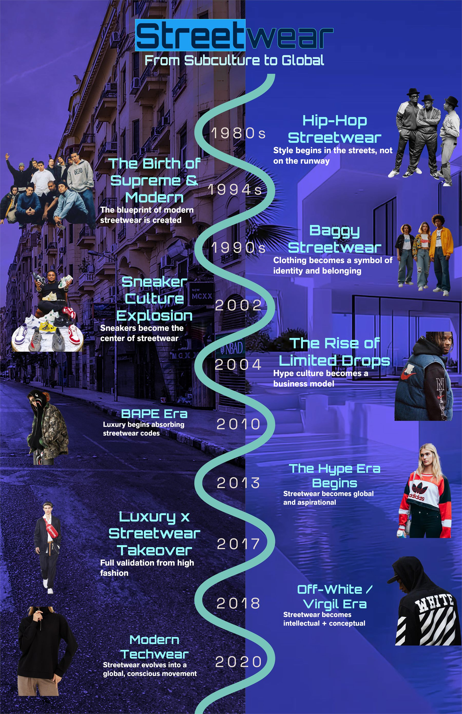

Information Design Project
Interactive Timeline
A timeline-based information design piece that organizes content into a clear visual sequence with strong hierarchy, pacing and narrative flow.
Project Type
Information design board, visual sequencing and structured timeline storytelling.
Portfolio Folder
Information Design, with space for diagrams, systems, annotated layouts and visual explanation pieces.